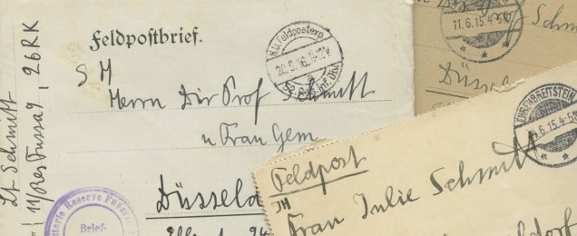

Feldpostbriefe, Heinrich-Heine-Institut, Nachlass Wilkar Schmitt
Die Feldpostbriefe von Hans Schmitt
10.12.2013Im August 1914 bricht nach einer Reihe dramatischer Konflikte der erste Weltkrieg aus.
Vor allem an der Westfront im heutigen Belgien entwickelt sich der Krieg hin zu einer reinen Materialschlacht.
Seit 1915 ist auch der junge Offizier Hans Schmitt an besagter Front stationiert und berichtet seiner Düsseldorfer Familie in einer Vielzahl von Feldpostbriefen von seinem Offiziersalltag.
Stellen seine Berichte eine Verharmlosung der Kriegsrealität dar, um seine Ängste zu verarbeiten und seine Familie zu beruhigen oder nimmt er den Krieg durch das geschützte Leben im Offiziersstützpunkt tatsächlich so harmlos wahr?